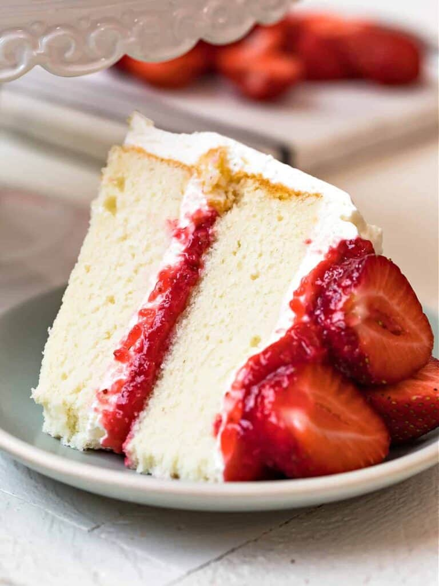

Vegan Basic Vanilla Cake

Recipe for Vegan Basic Vanilla Cake
This is a dense, yet somewhat spongy basic vegan cake. It can be topped with a basic vegan chocolate or vegan vanilla buttercream frosting. A nice, easy, basic, homemade favorite that doesn't taste like a box mix AND can be used as a tasty vegan birthday cake! Cool completely before topping with your favorite vegan buttercream frosting.
Ingredients
- 1 cup plain soy milk
- 1 tablespoon apple cider vinegar
- 1 ½ cups unbleached all-purpose flour
- 1 cup white sugar
- 1 teaspoon baking soda
- 1 teaspoon baking powder
- ½ teaspoon salt
- ⅓ cup canola oil
- ¼ cup water
- 1 tablespoon lemon juice
- 1 tablespoon vanilla extract
- ¼ teaspoon vanilla extract
Steps
- Preheat oven to 350 degrees F (175 degrees C). Grease and flour an 8x8-inch baking dish.
- Stir soy milk and vinegar together in a large glass measuring cup.
- Whisk flour, sugar, baking soda, baking powder, and salt together in a bowl.
- Briskly mix canola oil, water, lemon juice, vanilla extract, and almond extract into soy milk mixture using a fork. Stir soy milk mixture into flour mixture until batter is lump-free. Pour batter into the prepared baking dish.
- Bake in the preheated oven until a toothpick inserted in the center of the cake comes out clean, about 35 minutes.